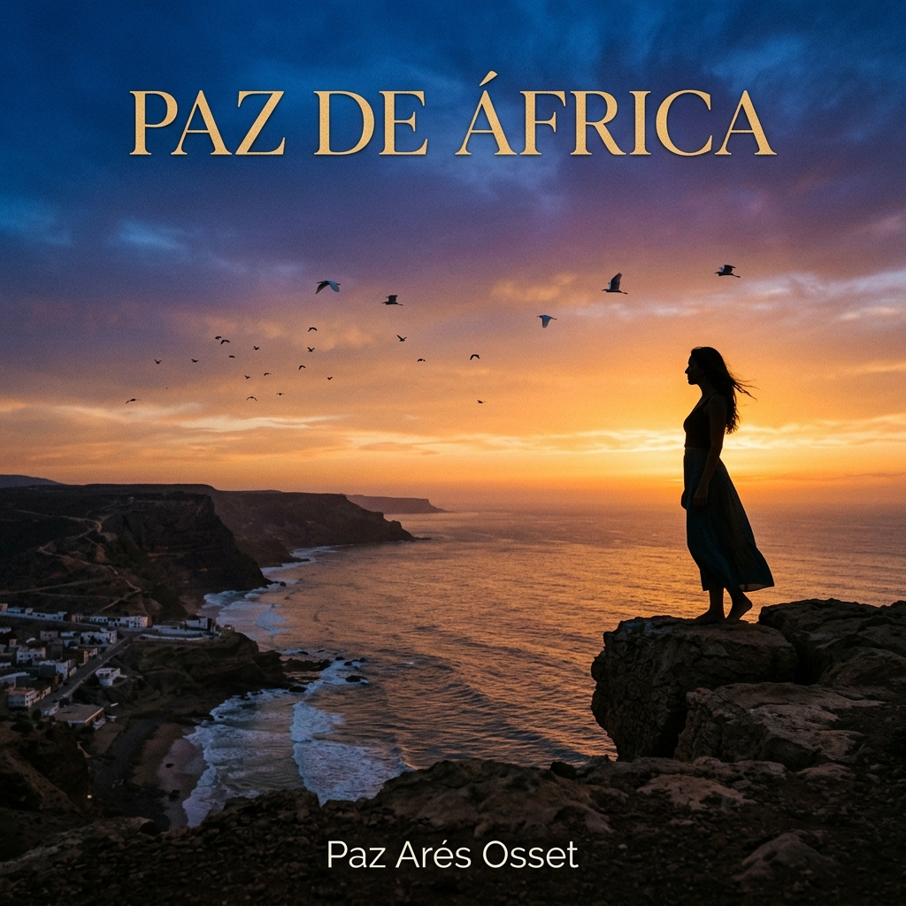
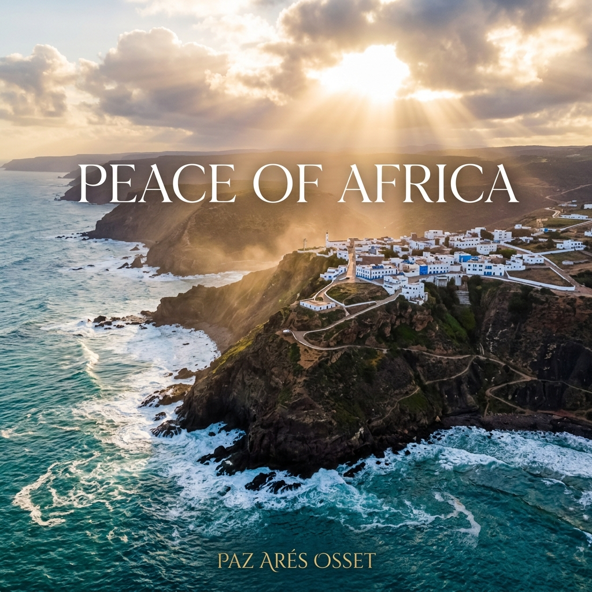
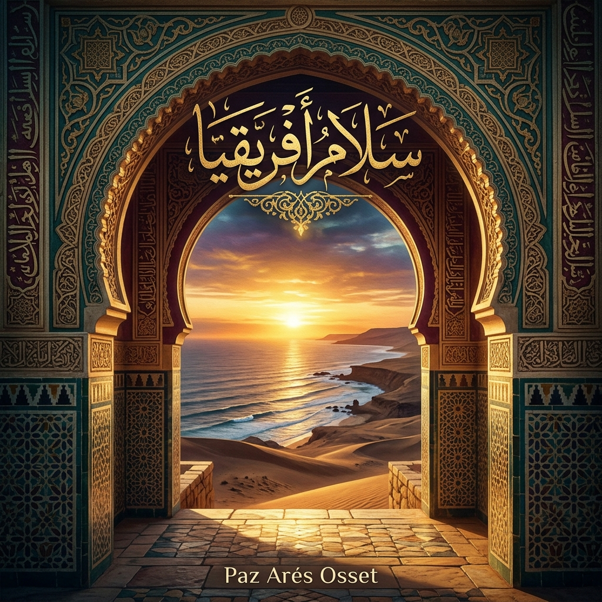
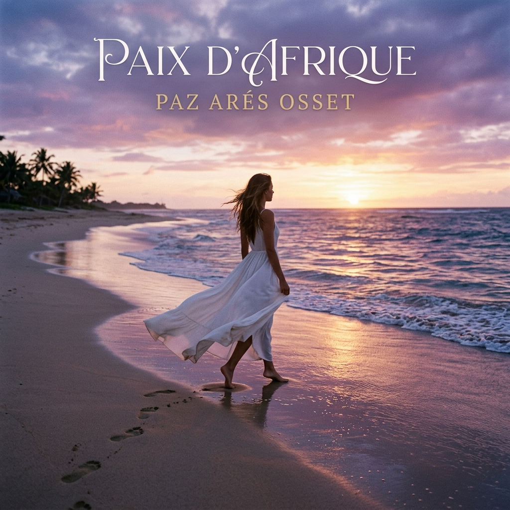

Biografía Ifni
Ifni Biography
Биография Ифни
Біографія Іфні
Biografia Ifni
伊夫尼传记
سيرة إفني
Ifni Biographie
Biographie Ifni
イフニの伝記
Biografia Ifni
Linktree

Paz de África
Peace of Africa
Мир Африки
Мир Африки
Pace d'Africa
非洲之和平
سلام أفريقيا
Frieden in Afrika
Paix d'Afrique
アフリカの平和
Paz de África
Un viaje poético y sincero que refleja una vida ligada a África y a su espíritu pacífico.
A heartfelt poetic journey reflecting on a life tied to Africa and its peaceful spirit.
Искреннее поэтическое путешествие, отражающее жизнь, связанную с Африкой и ее мирным духом.
Щира поетична подорож, що відображає життя, пов'язане з Африкою та її мирним духом.
Un viaggio poetico sincero che riflette su una vita legata all'Africa e al suo spirito pacifico.
一次反思与非洲及其和平精神紧密相连的生活的真诚诗意之旅。
رحلة شعرية صادقة تعكس حياة مرتبطة بأفريقيا وروحها المسالمة.
Eine herzliche poetische Reise, die über ein Leben nachdenkt, das mit Afrika und seinem friedlichen Geist verbunden ist.
Un voyage poétique sincère réfléchissant sur une vie liée à l'Afrique et à son esprit paisible.
アフリカとその平和な精神に結びついた人生を振り返る、心のこもった詩的な旅。
Uma viagem poética sincera que reflecte sobre uma vida ligada a África e ao seu espírito pacífico.
África en el Corazón
Africana y africanista.
Europea y española
Nacida en España y Marruecos
Europea y española
Nacida en España y Marruecos
En este viaje lírico poético...
Vuelvo de nuevo
A este extenso continente
Aledaño a España
Contenedor de mi cuna, Ifni
Vuelvo de nuevo
A este extenso continente
Aledaño a España
Contenedor de mi cuna, Ifni
Nací y renací en Sidi Ifni
Superviviente en mi difícil nacer
En la segunda mitad del siglo XX
Tres añitos de calamidades y miedos,
superviviente de la guerra de Ifni
Superviviente en mi difícil nacer
En la segunda mitad del siglo XX
Tres añitos de calamidades y miedos,
superviviente de la guerra de Ifni
Vinieron diez años felices,
Con mis padres,
mis dos hermanitas.
Tuve 5 hermanitos no nacidos.
Tantos amigos, tanto amor.
Fiestas, música y bailes.
Con mis padres,
mis dos hermanitas.
Tuve 5 hermanitos no nacidos.
Tantos amigos, tanto amor.
Fiestas, música y bailes.
Aprender y leer;
dibujar y pintar.
Bicicleta, patinar y nadar.
Cantar y tocar la guitarra.
dibujar y pintar.
Bicicleta, patinar y nadar.
Cantar y tocar la guitarra.
Renacía mi espíritu vital,
a la Paz y el Arte,
En mi amado Sidi Ifni.
En lo alto del acantilado
con su horizonte ribeteado.
a la Paz y el Arte,
En mi amado Sidi Ifni.
En lo alto del acantilado
con su horizonte ribeteado.
De color cobalto azulado.
Donde el sol poniente
despide el día bañado.
En el mar de las siete olas.
Un tesoro pequeño y grande.
Paraíso de mi infancia.
¡Siempre ahí mi corazón!
Donde el sol poniente
despide el día bañado.
En el mar de las siete olas.
Un tesoro pequeño y grande.
Paraíso de mi infancia.
¡Siempre ahí mi corazón!
¿Quién me iba a decir que…
Ifni me abandonaría con 14 años?
Exiliada de mi bella África.
Para evitar otra guerra.
Por España viví sin mi océano
Ifni me abandonaría con 14 años?
Exiliada de mi bella África.
Para evitar otra guerra.
Por España viví sin mi océano
Pasados veinticinco años
Volví de visita…
Mi casa sin jardín, ni huerto.
Intacto el amor de la gente.
Su hospitalidad amigable,
Volví de visita…
Mi casa sin jardín, ni huerto.
Intacto el amor de la gente.
Su hospitalidad amigable,
Ahora pienso en volver…
A respirar mi océano.
Y vivir la Paz que fui allí
A respirar mi océano.
Y vivir la Paz que fui allí
Africa in the Heart
African and Africanist.
European and Spanish
Born in Spain and Morocco
European and Spanish
Born in Spain and Morocco
In this lyrical poetic journey...
I return again
To this vast continent
Adjacent to Spain
Container of my cradle, Ifni
I return again
To this vast continent
Adjacent to Spain
Container of my cradle, Ifni
I was born and reborn in Sidi Ifni
Survivor of my difficult birth
In the second half of the 20th century
Three years of calamities and fears,
survivor of the Ifni war
Survivor of my difficult birth
In the second half of the 20th century
Three years of calamities and fears,
survivor of the Ifni war
Then came ten happy years,
With my parents,
my two little sisters.
I had 5 unborn siblings.
So many friends, so much love.
Parties, music and dances.
With my parents,
my two little sisters.
I had 5 unborn siblings.
So many friends, so much love.
Parties, music and dances.
Learning and reading;
drawing and painting.
Bicycle, skating and swimming.
Singing and playing the guitar.
drawing and painting.
Bicycle, skating and swimming.
Singing and playing the guitar.
My vital spirit was reborn,
To Peace and Art,
In my beloved Sidi Ifni.
On top of the cliff
with its fringed horizon.
To Peace and Art,
In my beloved Sidi Ifni.
On top of the cliff
with its fringed horizon.
Of bluish cobalt color.
Where the setting sun
bids farewell to the bathed day.
In the sea of the seven waves.
A small and big treasure.
Paradise of my childhood.
Always there my heart!
Where the setting sun
bids farewell to the bathed day.
In the sea of the seven waves.
A small and big treasure.
Paradise of my childhood.
Always there my heart!
Who would have told me that…
Ifni would abandon me at 14 years old?
Exiled from my beautiful Africa.
To avoid another war.
In Spain I lived without my ocean
Ifni would abandon me at 14 years old?
Exiled from my beautiful Africa.
To avoid another war.
In Spain I lived without my ocean
After twenty-five years
I returned to visit…
My house without garden, nor orchard.
Intact the love of the people.
Their friendly hospitality,
I returned to visit…
My house without garden, nor orchard.
Intact the love of the people.
Their friendly hospitality,
Now I think about returning…
To breathe my ocean.
And live the Peace that I was there
To breathe my ocean.
And live the Peace that I was there
Африка в сердце
Африканка и африканистка.
Европейка и испанка.
Рожденная в Испании и Марокко.
Европейка и испанка.
Рожденная в Испании и Марокко.
В этом поэтическом лирическом путешествии...
Я снова возвращаюсь
к этому огромному континенту,
соседствующему с Испанией,
вместилищу моей колыбели, Ифни.
Я снова возвращаюсь
к этому огромному континенту,
соседствующему с Испанией,
вместилищу моей колыбели, Ифни.
Я родилась и возродилась в Сиди-Ифни.
Я выжила при моем трудном рождении
во второй половине XX века.
Три года невзгод и страха,
выжившая в войне при Ифни.
Я выжила при моем трудном рождении
во второй половине XX века.
Три года невзгод и страха,
выжившая в войне при Ифни.
Затем настали десять счастливых лет
с моими родителями и двумя младшими сестрами.
У меня было 5 нерожденных братьев и сестер.
Так много друзей, так много любви.
с моими родителями и двумя младшими сестрами.
У меня было 5 нерожденных братьев и сестер.
Так много друзей, так много любви.
Учеба и чтение;
рисование и живопись.
Велосипед, коньки и плавание.
Пение и игра на гитаре.
рисование и живопись.
Велосипед, коньки и плавание.
Пение и игра на гитаре.
Мой жизненный дух возрождался
для Мира и Искусства
в моем любимом Сиди-Ифни.
На вершине утеса с его лазурным горизонтом.
для Мира и Искусства
в моем любимом Сиди-Ифни.
На вершине утеса с его лазурным горизонтом.
В цвете синего кобальта.
Где заходящее солнце прощается с омытым днем
в море семи волн.
Маленькое и большое сокровище.
Рай моего детства.
Мое сердце всегда там!
Где заходящее солнце прощается с омытым днем
в море семи волн.
Маленькое и большое сокровище.
Рай моего детства.
Мое сердце всегда там!
Кто бы мог подумать, что...
Ифни оставит меня в 14 лет?
Изгнанница из моей прекрасной Африки,
чтобы избежать новой войны.
В Испании я жила без моего океана.
Ифни оставит меня в 14 лет?
Изгнанница из моей прекрасной Африки,
чтобы избежать новой войны.
В Испании я жила без моего океана.
Спустя двадцать пять лет я вернулась...
Мой дом без сада и огорода.
Любовь людей осталась неизменной.
Их дружелюбное гостеприимство.
Мой дом без сада и огорода.
Любовь людей осталась неизменной.
Их дружелюбное гостеприимство.
Теперь я думаю о возвращении...
Чтобы снова дышать моим океаном.
И жить в Мире, которым я была там.
Чтобы снова дышать моим океаном.
И жить в Мире, которым я была там.
Африка в серці
Африканка та африканістка.
Європейка та іспанка.
Народжена в Іспанії та Марокко.
Європейка та іспанка.
Народжена в Іспанії та Марокко.
У цій поетичній ліричній подорожі...
Я знову повертаюся
до цього величезного континенту,
що межує з Іспанією,
колиски мого дитинства, Іфні.
Я знову повертаюся
до цього величезного континенту,
що межує з Іспанією,
колиски мого дитинства, Іфні.
Я народилася і переродилася в Сіді-Іфні.
Вижила під час мого важкого народження
у другій половині XX століття.
Три роки негараздів і страхів,
вижила у війні за Іфні.
Вижила під час мого важкого народження
у другій половині XX століття.
Три роки негараздів і страхів,
вижила у війні за Іфні.
Потім настали десять щасливих років
з моїми батьками та двома моїми молодшими сестрами.
У мене було 5 ненароджених братів і сестер.
Так багато друзів, так багато любові.
з моїми батьками та двома моїми молодшими сестрами.
У мене було 5 ненароджених братів і сестер.
Так багато друзів, так багато любові.
Навчання та читання;
малювання та живопис.
Велосипед, ковзани та плавання.
Спів та гра на гітарі.
малювання та живопис.
Велосипед, ковзани та плавання.
Спів та гра на гітарі.
Моя життєва енергія відроджувалася
для Миру та Мистецтва
в моєму улюбленому Сіді-Іфні.
На вершині скелі з її блакитним горизонтом.
для Миру та Мистецтва
в моєму улюбленому Сіді-Іфні.
На вершині скелі з її блакитним горизонтом.
Кольору синього кобальту.
Де захід сонця прощається з днем,
омитим у морі семи хвиль.
Маленький і великий скарб.
Рай мого дитинства.
Моє серце завжди там!
Де захід сонця прощається з днем,
омитим у морі семи хвиль.
Маленький і великий скарб.
Рай мого дитинства.
Моє серце завжди там!
Хто б міг подумати, що...
Іфні покине мене в 14 років?
Вигнана з моєї прекрасної Африки,
щоб уникнути нової війни.
В Іспанії я жила без мого океану.
Іфні покине мене в 14 років?
Вигнана з моєї прекрасної Африки,
щоб уникнути нової війни.
В Іспанії я жила без мого океану.
Через двадцять п'ять років я повернулася...
Мій будинок без саду та городу.
Любов людей залишилася незмінною.
Їхня дружня гостинність.
Мій будинок без саду та городу.
Любов людей залишилася незмінною.
Їхня дружня гостинність.
Тепер я думаю про повернення...
Щоб знову дихати моїм океаном.
І жити в Мирі, яким я була там.
Щоб знову дихати моїм океаном.
І жити в Мирі, яким я була там.
Africa nel Cuore
Africana e africanista.
Europea e spagnola
Nata in Spagna e Marocco
Europea e spagnola
Nata in Spagna e Marocco
In questo viaggio lirico poetico...
Ritorno ancora
In questo vasto continente
Adiacente alla Spagna
Contenitore della mia culla, Ifni
Ritorno ancora
In questo vasto continente
Adiacente alla Spagna
Contenitore della mia culla, Ifni
Sono nata e rinata a Sidi Ifni
Sopravvissuta alla mia difficile nascita
Nella seconda metà del XX secolo
Tre anni di calamità e paure,
sopravvissuta alla guerra di Ifni
Sopravvissuta alla mia difficile nascita
Nella seconda metà del XX secolo
Tre anni di calamità e paure,
sopravvissuta alla guerra di Ifni
Vennero dieci anni felici,
Con i miei genitori,
le mie due sorelline.
Ho avuto 5 fratelli non nati.
Tanti amici, tanto amore.
Feste, musica e balli.
Con i miei genitori,
le mie due sorelline.
Ho avuto 5 fratelli non nati.
Tanti amici, tanto amore.
Feste, musica e balli.
Imparare e leggere;
disegnare e dipingere.
Bicicletta, pattinare e nuotare.
Cantare e suonare la chitarra.
disegnare e dipingere.
Bicicletta, pattinare e nuotare.
Cantare e suonare la chitarra.
Rinacque il mio spirito vitale,
alla Pace e all'Arte,
Nel mio amato Sidi Ifni.
Sulla cima della scogliera
con il suo orizzonte azzurro.
alla Pace e all'Arte,
Nel mio amato Sidi Ifni.
Sulla cima della scogliera
con il suo orizzonte azzurro.
Di colore cobalto azzurro.
Dove il sole al tramonto
saluta il giorno bagnato.
Nel mare delle sette onde.
Un piccolo e grande tesoro.
Paradiso della mia infanzia.
Il mio cuore è sempre lì!
Dove il sole al tramonto
saluta il giorno bagnato.
Nel mare delle sette onde.
Un piccolo e grande tesoro.
Paradiso della mia infanzia.
Il mio cuore è sempre lì!
Chi mi avrebbe detto che...
Ifni mi avrebbe lasciato a 14 anni?
Esiliata dalla mia bella Africa.
Per evitare un'altra guerra.
In Spagna ho vissuto senza il mio oceano
Ifni mi avrebbe lasciato a 14 anni?
Esiliata dalla mia bella Africa.
Per evitare un'altra guerra.
In Spagna ho vissuto senza il mio oceano
Dopo venticinque anni
sono tornata in visita...
La mia casa senza giardino o frutteto.
L'amore della gente intatto.
sono tornata in visita...
La mia casa senza giardino o frutteto.
L'amore della gente intatto.
Ora penso di tornare...
A respirare il mio oceano.
E vivere la Pace che ero lì
A respirare il mio oceano.
E vivere la Pace che ero lì
非洲在心中
非洲人，非洲主义者。
欧洲人，西班牙人
出生在西班牙和摩洛哥
欧洲人，西班牙人
出生在西班牙和摩洛哥
在这段抒情的诗意旅途中……
我再次归来
回到这片辽阔的大陆
紧邻西班牙
承载着我的摇篮——伊夫尼
我再次归来
回到这片辽阔的大陆
紧邻西班牙
承载着我的摇篮——伊夫尼
我在西迪伊夫尼出生又重生
在我艰难的降生中幸存
在二十世纪下半叶
三年的灾难与恐惧，
伊夫尼战争的幸存者
在我艰难的降生中幸存
在二十世纪下半叶
三年的灾难与恐惧，
伊夫尼战争的幸存者
接下来是十年幸福的时光，
与我的父母，
我的两个小妹妹。
我有五个未出生的兄弟姐妹。
那么多朋友，那么多爱。
节日、音乐和舞蹈。
与我的父母，
我的两个小妹妹。
我有五个未出生的兄弟姐妹。
那么多朋友，那么多爱。
节日、音乐和舞蹈。
学习和阅读；
绘画和描画。
骑自行车、溜冰和游泳。
唱歌和弹吉他。
绘画和描画。
骑自行车、溜冰和游泳。
唱歌和弹吉他。
我的生命精神重生了，
为了和平与艺术，
在我心爱的西迪伊夫尼。
在悬崖之巅
映着它镶边的地平线。
为了和平与艺术，
在我心爱的西迪伊夫尼。
在悬崖之巅
映着它镶边的地平线。
钴蓝色的色彩。
夕阳在那里
告别沐浴过的白昼。
在七波之海。
一个小而伟大的宝藏。
我童年的天堂。
我的心永远在那里！
夕阳在那里
告别沐浴过的白昼。
在七波之海。
一个小而伟大的宝藏。
我童年的天堂。
我的心永远在那里！
谁能告诉我……
伊夫尼会在我14岁时抛弃我？
被流放出我美丽的非洲。
为了避免另一场战争。
在西班牙，我没有了我的海洋
伊夫尼会在我14岁时抛弃我？
被流放出我美丽的非洲。
为了避免另一场战争。
在西班牙，我没有了我的海洋
二十五年后
我回去探访……
我的房子没有了花园，也没有果园。
人们的爱依然完好。
他们友善的好客，
我回去探访……
我的房子没有了花园，也没有果园。
人们的爱依然完好。
他们友善的好客，
现在我想着回去……
去呼吸我的海洋。
去活出我在那里曾有的和平
去呼吸我的海洋。
去活出我在那里曾有的和平
أفريقيا في القلب
أفريقية وعاشقة لأفريقيا.
أوروبية وإسبانية
وُلدت في إسبانيا والمغرب
أوروبية وإسبانية
وُلدت في إسبانيا والمغرب
في هذه الرحلة الشعرية الغنائية...
أعود من جديد
إلى هذه القارة الشاسعة
المجاورة لإسبانيا
حاضنة مهدي، إفني
أعود من جديد
إلى هذه القارة الشاسعة
المجاورة لإسبانيا
حاضنة مهدي، إفني
وُلدت وأُعيد ميلادي في سيدي إفني
ناجية من ولادتي العسيرة
في النصف الثاني من القرن العشرين
ثلاث سنوات من الكوارث والمخاوف،
ناجية من حرب إفني
ناجية من ولادتي العسيرة
في النصف الثاني من القرن العشرين
ثلاث سنوات من الكوارث والمخاوف،
ناجية من حرب إفني
ثم جاءت عشر سنوات سعيدة،
مع والديّ،
وأختيّ الصغيرتين.
كان لي خمسة إخوة لم يُولدوا.
كثير من الأصدقاء، كثير من الحب.
أعياد وموسيقى ورقص.
مع والديّ،
وأختيّ الصغيرتين.
كان لي خمسة إخوة لم يُولدوا.
كثير من الأصدقاء، كثير من الحب.
أعياد وموسيقى ورقص.
التعلّم والقراءة؛
الرسم والتلوين.
الدراجة والتزلج والسباحة.
الغناء والعزف على الغيتار.
الرسم والتلوين.
الدراجة والتزلج والسباحة.
الغناء والعزف على الغيتار.
تجدّدت روحي الحيّة،
للسلام والفن،
في سيدي إفني الحبيبة.
على قمة الجرف
بأفقه المُطرّز.
للسلام والفن،
في سيدي إفني الحبيبة.
على قمة الجرف
بأفقه المُطرّز.
بلون الكوبالت الأزرق.
حيث تودّع الشمس الغاربة
النهار المغمور بالماء.
في بحر الأمواج السبع.
كنز صغير وعظيم.
جنّة طفولتي.
قلبي هناك دائماً!
حيث تودّع الشمس الغاربة
النهار المغمور بالماء.
في بحر الأمواج السبع.
كنز صغير وعظيم.
جنّة طفولتي.
قلبي هناك دائماً!
من كان ليقول لي أن...
إفني ستتخلى عني في الرابعة عشرة؟
منفيّة من أفريقيتي الجميلة.
لتجنّب حرب أخرى.
في إسبانيا عشت بلا محيطي
إفني ستتخلى عني في الرابعة عشرة؟
منفيّة من أفريقيتي الجميلة.
لتجنّب حرب أخرى.
في إسبانيا عشت بلا محيطي
بعد خمسة وعشرين عاماً
عدت في زيارة...
بيتي بلا حديقة ولا بستان.
حب الناس لم يتغير.
كرمهم الودود،
عدت في زيارة...
بيتي بلا حديقة ولا بستان.
حب الناس لم يتغير.
كرمهم الودود،
الآن أفكر في العودة...
لأتنفس محيطي.
وأعيش السلام الذي كنتُه هناك
لأتنفس محيطي.
وأعيش السلام الذي كنتُه هناك
Afrika im Herzen
Afrikanerin und Afrikanistin.
Europäerin und Spanierin
Geboren in Spanien und Marokko
Europäerin und Spanierin
Geboren in Spanien und Marokko
Auf dieser lyrisch-poetischen Reise...
Kehre ich wieder zurück
Zu diesem weiten Kontinent
Angrenzend an Spanien
Behälter meiner Wiege, Ifni
Kehre ich wieder zurück
Zu diesem weiten Kontinent
Angrenzend an Spanien
Behälter meiner Wiege, Ifni
Ich wurde geboren und wiedergeboren in Sidi Ifni
Überlebende meiner schwierigen Geburt
In der zweiten Hälfte des 20. Jahrhunderts
Drei Jahre voller Katastrophen und Ängste,
Überlebende des Ifni-Krieges
Überlebende meiner schwierigen Geburt
In der zweiten Hälfte des 20. Jahrhunderts
Drei Jahre voller Katastrophen und Ängste,
Überlebende des Ifni-Krieges
Dann kamen zehn glückliche Jahre,
Mit meinen Eltern,
meinen zwei kleinen Schwestern.
Ich hatte 5 ungeborene Geschwister.
So viele Freunde, so viel Liebe.
Feste, Musik und Tänze.
Mit meinen Eltern,
meinen zwei kleinen Schwestern.
Ich hatte 5 ungeborene Geschwister.
So viele Freunde, so viel Liebe.
Feste, Musik und Tänze.
Lernen und Lesen;
Zeichnen und Malen.
Fahrrad, Schlittschuhlaufen und Schwimmen.
Singen und Gitarre spielen.
Zeichnen und Malen.
Fahrrad, Schlittschuhlaufen und Schwimmen.
Singen und Gitarre spielen.
Mein Lebensgeist wurde wiedergeboren,
Für Frieden und Kunst,
In meinem geliebten Sidi Ifni.
Oben auf der Klippe
mit seinem gesäumten Horizont.
Für Frieden und Kunst,
In meinem geliebten Sidi Ifni.
Oben auf der Klippe
mit seinem gesäumten Horizont.
In bläulichem Kobaltblau.
Wo die untergehende Sonne
den gebadeten Tag verabschiedet.
Im Meer der sieben Wellen.
Ein kleiner und großer Schatz.
Paradies meiner Kindheit.
Immer dort mein Herz!
Wo die untergehende Sonne
den gebadeten Tag verabschiedet.
Im Meer der sieben Wellen.
Ein kleiner und großer Schatz.
Paradies meiner Kindheit.
Immer dort mein Herz!
Wer hätte mir gesagt, dass…
Ifni mich mit 14 Jahren verlassen würde?
Verbannt aus meinem schönen Afrika.
Um einen weiteren Krieg zu vermeiden.
In Spanien lebte ich ohne meinen Ozean
Ifni mich mit 14 Jahren verlassen würde?
Verbannt aus meinem schönen Afrika.
Um einen weiteren Krieg zu vermeiden.
In Spanien lebte ich ohne meinen Ozean
Nach fünfundzwanzig Jahren
Kehrte ich zu Besuch zurück…
Mein Haus ohne Garten, ohne Obstgarten.
Die Liebe der Menschen unverändert.
Ihre freundliche Gastfreundschaft,
Kehrte ich zu Besuch zurück…
Mein Haus ohne Garten, ohne Obstgarten.
Die Liebe der Menschen unverändert.
Ihre freundliche Gastfreundschaft,
Jetzt denke ich an die Rückkehr…
Meinen Ozean zu atmen.
Und den Frieden zu leben, der ich dort war
Meinen Ozean zu atmen.
Und den Frieden zu leben, der ich dort war
L'Afrique dans le Cœur
Africaine et africaniste.
Européenne et espagnole
Née en Espagne et au Maroc
Européenne et espagnole
Née en Espagne et au Maroc
Dans ce voyage lyrique et poétique...
Je reviens à nouveau
Vers ce vaste continent
Voisin de l'Espagne
Berceau de ma naissance, Ifni
Je reviens à nouveau
Vers ce vaste continent
Voisin de l'Espagne
Berceau de ma naissance, Ifni
Je suis née et renée à Sidi Ifni
Survivante de ma naissance difficile
Dans la seconde moitié du XXe siècle
Trois années de calamités et de peurs,
survivante de la guerre d'Ifni
Survivante de ma naissance difficile
Dans la seconde moitié du XXe siècle
Trois années de calamités et de peurs,
survivante de la guerre d'Ifni
Sont venues dix années heureuses,
Avec mes parents,
mes deux petites sœurs.
J'ai eu 5 frères et sœurs non nés.
Tant d'amis, tant d'amour.
Fêtes, musique et danses.
Avec mes parents,
mes deux petites sœurs.
J'ai eu 5 frères et sœurs non nés.
Tant d'amis, tant d'amour.
Fêtes, musique et danses.
Apprendre et lire ;
dessiner et peindre.
Vélo, patiner et nager.
Chanter et jouer de la guitare.
dessiner et peindre.
Vélo, patiner et nager.
Chanter et jouer de la guitare.
Renaissait mon esprit vital,
Pour la Paix et l'Art,
Dans mon cher Sidi Ifni.
Au sommet de la falaise
avec son horizon ourlé.
Pour la Paix et l'Art,
Dans mon cher Sidi Ifni.
Au sommet de la falaise
avec son horizon ourlé.
De couleur cobalt bleuté.
Où le soleil couchant
fait ses adieux au jour baigné.
Dans la mer aux sept vagues.
Un petit et grand trésor.
Paradis de mon enfance.
Mon cœur est toujours là !
Où le soleil couchant
fait ses adieux au jour baigné.
Dans la mer aux sept vagues.
Un petit et grand trésor.
Paradis de mon enfance.
Mon cœur est toujours là !
Qui m'aurait dit que…
Ifni m'abandonnerait à 14 ans ?
Exilée de ma belle Afrique.
Pour éviter une autre guerre.
En Espagne j'ai vécu sans mon océan
Ifni m'abandonnerait à 14 ans ?
Exilée de ma belle Afrique.
Pour éviter une autre guerre.
En Espagne j'ai vécu sans mon océan
Vingt-cinq ans plus tard
je suis revenue en visite…
Ma maison sans jardin, ni verger.
L'amour des gens intact.
Leur hospitalité amicale,
je suis revenue en visite…
Ma maison sans jardin, ni verger.
L'amour des gens intact.
Leur hospitalité amicale,
Maintenant je pense à revenir…
Respirer mon océan.
Et vivre la Paix que j'étais là-bas
Respirer mon océan.
Et vivre la Paix que j'étais là-bas
心の中のアフリカ
アフリカ人であり、アフリカ主義者。
ヨーロッパ人であり、スペイン人
スペインとモロッコに生まれた
ヨーロッパ人であり、スペイン人
スペインとモロッコに生まれた
この叙情的な詩の旅で…
私は再び戻る
この広大な大陸へ
スペインに隣接する
私の揺りかごを抱く地、イフニ
私は再び戻る
この広大な大陸へ
スペインに隣接する
私の揺りかごを抱く地、イフニ
シディ・イフニで生まれ、再び生まれた
困難な誕生を生き延びた
二十世紀後半に
三年間の災難と恐怖、
イフニ戦争の生存者
困難な誕生を生き延びた
二十世紀後半に
三年間の災難と恐怖、
イフニ戦争の生存者
そして幸せな十年が訪れた、
両親と共に、
二人の妹と共に。
生まれなかった五人の兄弟がいた。
たくさんの友達、たくさんの愛。
祭り、音楽、踊り。
両親と共に、
二人の妹と共に。
生まれなかった五人の兄弟がいた。
たくさんの友達、たくさんの愛。
祭り、音楽、踊り。
学ぶこと、読むこと；
描くこと、塗ること。
自転車、スケート、水泳。
歌うこと、ギターを弾くこと。
描くこと、塗ること。
自転車、スケート、水泳。
歌うこと、ギターを弾くこと。
私の生命の精神は再生した、
平和と芸術のために、
愛するシディ・イフニで。
断崖の頂上で
縁取られた地平線と共に。
平和と芸術のために、
愛するシディ・イフニで。
断崖の頂上で
縁取られた地平線と共に。
コバルトブルーの色。
沈む太陽が
水浴びした一日に別れを告げる場所。
七つの波の海で。
小さくて大きな宝物。
私の幼少期の楽園。
いつもそこに私の心がある！
沈む太陽が
水浴びした一日に別れを告げる場所。
七つの波の海で。
小さくて大きな宝物。
私の幼少期の楽園。
いつもそこに私の心がある！
誰が私に言えただろう…
イフニが14歳で私を見捨てると？
美しいアフリカから追放された。
もう一つの戦争を避けるために。
スペインで私は海のない日々を過ごした
イフニが14歳で私を見捨てると？
美しいアフリカから追放された。
もう一つの戦争を避けるために。
スペインで私は海のない日々を過ごした
二十五年後
私は訪問のために戻った…
庭もなく、果樹園もない私の家。
人々の愛はそのまま残っていた。
彼らの温かいもてなし、
私は訪問のために戻った…
庭もなく、果樹園もない私の家。
人々の愛はそのまま残っていた。
彼らの温かいもてなし、
今、私は戻ることを考えている…
私の海を呼吸するために。
そしてあの場所で私がそうであった平和を生きるために
私の海を呼吸するために。
そしてあの場所で私がそうであった平和を生きるために
África no Coração
Africana e africanista.
Europeia e espanhola
Nascida em Espanha e Marrocos
Europeia e espanhola
Nascida em Espanha e Marrocos
Nesta viagem lírica e poética...
Regresso de novo
A este extenso continente
Vizinho de Espanha
Berço da minha infância, Ifni
Regresso de novo
A este extenso continente
Vizinho de Espanha
Berço da minha infância, Ifni
Nasci e renasci em Sidi Ifni
Sobrevivente do meu difícil nascimento
Na segunda metade do século XX
Três anos de calamidades e medos,
sobrevivente da guerra de Ifni
Sobrevivente do meu difícil nascimento
Na segunda metade do século XX
Três anos de calamidades e medos,
sobrevivente da guerra de Ifni
Vieram dez anos felizes,
Com os meus pais,
as minhas duas irmãzinhas.
Tive 5 irmãos que não nasceram.
Tantos amigos, tanto amor.
Festas, música e danças.
Com os meus pais,
as minhas duas irmãzinhas.
Tive 5 irmãos que não nasceram.
Tantos amigos, tanto amor.
Festas, música e danças.
Aprender e ler;
desenhar e pintar.
Bicicleta, patinar e nadar.
Cantar e tocar guitarra.
desenhar e pintar.
Bicicleta, patinar e nadar.
Cantar e tocar guitarra.
Renascia o meu espírito vital,
Para a Paz e a Arte,
No meu amado Sidi Ifni.
No alto da falésia
com o seu horizonte debruado.
Para a Paz e a Arte,
No meu amado Sidi Ifni.
No alto da falésia
com o seu horizonte debruado.
De cor cobalto azulado.
Onde o sol poente
se despede do dia banhado.
No mar das sete ondas.
Um tesouro pequeno e grande.
Paraíso da minha infância.
O meu coração está sempre lá!
Onde o sol poente
se despede do dia banhado.
No mar das sete ondas.
Um tesouro pequeno e grande.
Paraíso da minha infância.
O meu coração está sempre lá!
Quem me diria que…
Ifni me abandonaria aos 14 anos?
Exilada da minha bela África.
Para evitar outra guerra.
Em Espanha vivi sem o meu oceano
Ifni me abandonaria aos 14 anos?
Exilada da minha bela África.
Para evitar outra guerra.
Em Espanha vivi sem o meu oceano
Passados vinte e cinco anos
Voltei em visita…
A minha casa sem jardim, nem horta.
Intacto o amor das pessoas.
A sua hospitalidade amigável,
Voltei em visita…
A minha casa sem jardim, nem horta.
Intacto o amor das pessoas.
A sua hospitalidade amigável,
Agora penso em voltar…
A respirar o meu oceano.
E viver a Paz que fui lá
A respirar o meu oceano.
E viver a Paz que fui lá
Música — Paz de África Music — Peace of Africa Музыка — Мир Африки Музика — Мир Африки Musica — Pace d'Africa 音乐 — 非洲之和平 موسيقى — سلام أفريقيا Musik — Frieden in Afrika Musique — Paix d'Afrique 音楽 — アフリカの平和 Música — Paz de África

Disco en Castellano
Spanish Album
Испанский диск
Іспанський диск
Disco in Spagnolo
西班牙语专辑
ألبوم بالإسبانية
Spanisches Album
Album en Espagnol
スペイン語アルバム
Álbum em Espanhol
Paz Arés Osset
Spotify

Disco en Inglés
English Album
Английский диск
Англійський диск
Disco in Inglese
英语专辑
ألبوم بالإنجليزية
Englisches Album
Album en Anglais
英語アルバム
Álbum em Inglês
Paz Arés Osset
Spotify

Disco en Árabe
Arabic Album
Арабский диск
Арабський диск
Disco in Arabo
阿拉伯语专辑
ألبوم بالعربية
Arabisches Album
Album en Arabe
アラビア語アルバム
Álbum em Árabe
Paz Arés Osset
Spotify

Disco en Francés
French Album
Французский диск
Французький диск
Disco in Francese
法语专辑
ألبوم بالفرنسية
Französisches Album
Album en Français
フランス語アルバム
Álbum em Francês
Paz Arés Osset
Spotify